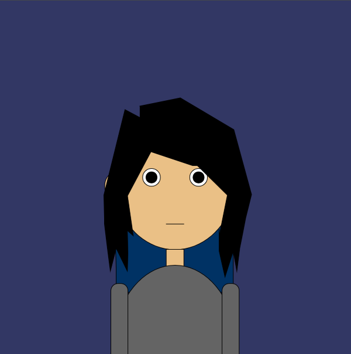
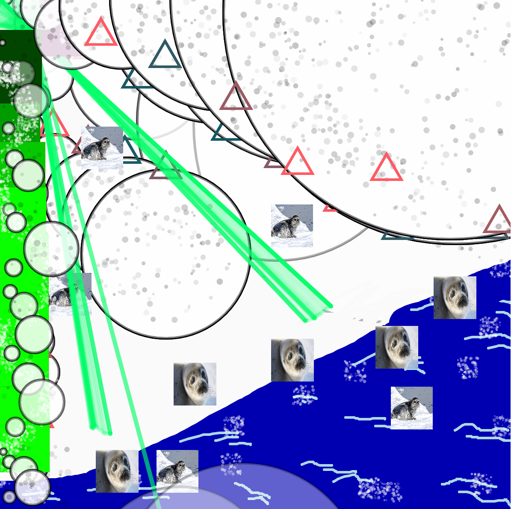

This is an art portrait created through the processing program with codes from p5.js and chapters on how to format shapes and colors which came fairly close enough self portrait of me :)!
Code Below:
function setup() {
createCanvas(600, 600);
}
function draw() {
background(50,55,100);
//back hair
fill(0, 50, 100);
beginShape()
vertex(195,289);
vertex(200,455);
vertex(200,495);
vertex(200,495);
vertex(399,495);
vertex(399,495);
vertex(399,440);
vertex(399,289);
endShape()
//face
fill(234, 192, 134);
ellipse(300, 300, 210, 245);
//ears
fill(234, 192, 134);
ellipse(195, 315, 29, 44);
ellipse(405, 315, 29, 44);
//lefteye
fill(255)
circle(260, 300, 30)
fill(1)
circle(260, 300, 19)
//righteye
fill(255)
circle(340, 300, 30)
fill(1)
circle(340, 300, 19)
//mouth
line(285,379, 315,379);
//hair
fill(0);
beginShape();
vertex(240,250);
vertex(330,280);
vertex(338,280);
vertex(389,330);
vertex(375,399);
vertex(375,388);
vertex(375,425);
vertex(385,469);
vertex(399,425);
vertex(405,459);
vertex(410,420);
vertex(415,395);
vertex(420,369);
vertex(430,329);
vertex(400,219);
vertex(309,165);
vertex(240,179);
endShape();
//left hair
fill(0);
beginShape();
vertex(219,330);
vertex(229,399);
vertex(219,390);
vertex(220,429);
vertex(219,459);
vertex(200,420);
vertex(190,459);
vertex(185,420);
vertex(180,379);
vertex(180,370);
vertex(179,330);
vertex(215,185);
vertex(279,219);
vertex(215,339);
endShape();
//neck
fill(234, 192, 134);
rect(285,422,30,39);
//body
fill(100)
ellipse(300,599,215,300)
// longsleeve
fill(100);
rect(191, 480, 29, 145, 12);
rect(380, 480, 29, 145, 12);
DIY PhotoShop

I made 2 brushes of different shades and thickness, 1 eraser brush, 2 airbrushes, 1 ray brush, 1 brush that ranges from different sized circles, 2 textbox colored brushes, and 2 image based brushes. I, created this for an aesthetic viewpoint, I like seals and think they're funny and I decided to create brushes that made it look like they were partying or being silly.
Code Below:
> var img;
//var img2;
//var img3;
var initials ='ko'; // your initials
var choice = '1'; // starting choice, so it is not empty
var screenbg = 250; // off white background
var lastscreenshot=61; // last screenshot never taken
function preload() {
// preload() runs once, it may make you wait
// img = loadImage('cat.png'); // cat.jpg needs to be next to this .js file
// you can link to an image on your github account
// img = loadImage('https://veryprofessional3d.github.io/images/cat3.jpg');
img2 = loadImage('https://kimnqze.github.io/seal3.jpg');
img3 = loadImage('https://kimnqze.github.io/seal1.jpg');
}
function setup() {
createCanvas(600, 600); // canvas size
background(screenbg); // use our background screen color
}
function draw() {
if (keyIsPressed) {
choice = key; // set choice to the key that was pressed
clear_print(); // check to see if it is clear screen or save image
}
if (mouseIsPressed){
newkeyChoice(choice); // if the mouse is pressed call newkeyChoice
}
}
function newkeyChoice(toolChoice) { //toolchoice is the key that was pressed
// the key mapping if statements that you can change to do anything you want.
// just make sure each key option has the a stroke or fill and then what type of
// graphic function
if (toolChoice == '1' ) { // first tool - blue brush
stroke(173,216,230);
strokeWeight(03);
line(mouseX, mouseY, pmouseX, pmouseY);
} else if (toolChoice == '2') { // second tool - eraser
strokeWeight(4);
stroke(screenbg);
line(mouseX, mouseY, pmouseX, pmouseY);
} else if (toolChoice == '3') { // third tool - different sizes of circles
stroke(0, 1, 3, 70);
strokeWeight(3);
circle(mouseX, mouseY, pmouseX, pmouseY);
} else if (toolChoice == '4') { // fourth tool - thick blue brush
stroke('rgba(0, 0, 177, 1)');
strokeWeight(40);
line(mouseX, mouseY, pmouseX, pmouseY);
} else if (key == '5') { // fifth tool - spread gray airbrush
noStroke();
let ox = random(-30, 30);
let oy = random(-30, 30);
fill(0, random(10, 60));
circle(mouseX + ox, mouseY + oy, random(3, 8));
} else if (toolChoice == '6') { // sixth tool - colored triangle
push();
const h = (frameCount * 3) % 360;
noFill();
stroke(h, 90, 100, 220);
strokeWeight(3);
const r = 20;
triangle(
mouseX, mouseY - r,
mouseX - r * 0.866, mouseY + r / 2,
mouseX + r * 0.866, mouseY + r / 2
);
pop();
} else if (toolChoice == '7') { // seventh tool - image 3 seal
image(img3, mouseX-25, mouseY-25, 50, 50,20);
} else if (toolChoice == '8') { // eighth tool - close white airbrush
noStroke();
for (let i = 0; i < 18; i++) {
let ox = random(-12, 12);
let oy = random(-12, 12);
fill(300, random(50, 150));
circle(mouseX + ox, mouseY + oy, random(1.5, 4));
}
} else if (toolChoice == '9') { // ninth tool - green ray brush
stroke(0, 355, 104, 30)
strokeWeight(05);
line(mouseX, mouseY, pmouseX, pmouseY);
triangle(mouseX, mouseY, 40, 40);
} else if (toolChoice == '0') { // tenth tool - green to pink squares
push();
const h = (frameCount * 1) % 390;
fill(0)
stroke(h, 0, 0, 20);
strokeWeight(0.5);
const r = 20;
testbox(
mouseX, mouseY - r,
mouseX - r * 0.866, mouseY + r / 2,
mouseX + r * 0.866, mouseY + r / 2
);
pop();
} else if (toolChoice == 'g' || toolChoice == 'G') { // g places the image we pre-loaded
image(img2, mouseX, mouseY, 50, 50);
} else if (toolChoice == 'h' || toolChoice == 'H') { // g places the image we pre-loaded
image(img3, mouseX-25, mouseY-25, 50, 50,20);
// } else if (toolChoice == 'i' || toolChoice == 'I') { // g places the image we pre-loaded
// image(img3, mouseX-25, mouseY-25, 50, 50,20);
}
}
function testbox(r, g, b) {
// this is a test function that will show you how you can put your own functions into the sketch
x = mouseX;
y = mouseY;
fill(r, g, b);
rect(x-50, y-50, 100, 100);
}
function clear_print() {
// this will do one of two things, x clears the screen by resetting the background
// p calls the routine saveme, which saves a copy of the screen
if (key == 'x' || key == 'X') {
background(screenbg); // set the screen back to the background color
} else if (key == 'p' || key == 'P') {
saveme(); // call saveme which saves an image of the screen
}
}
function saveme(){
//this will save the name as the intials, date, time and a millis counting number.
// it will always be larger in value then the last one.
filename=initials+day() + hour() + minute() +second();
if (second()!=lastscreenshot) { // don't take a screenshot if you just took one
saveCanvas(filename, 'jpg');
key="";
}
lastscreenshot=second(); // set this to the current second so no more than one per second
}